Configure the Model
Add governance to the Model — match rules to identify duplicates, data-quality steps to validate inbound records, and tags to track lifecycle. Then publish and deploy.
What you'll cover
- Create a Match Rule
- Create a Data Quality Step
- Create a Tag
- Publish & Deploy the Model
Create a Match Rule
Click on "Match Rules" and then "Add Your First Match Rule":
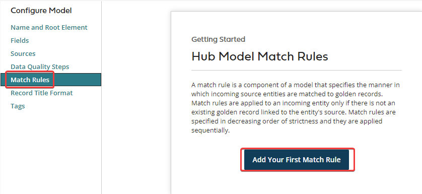
Click on "Add an Expression":
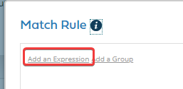
Click "Choose" 🡪 "Name":
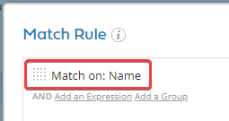
Click "Save":
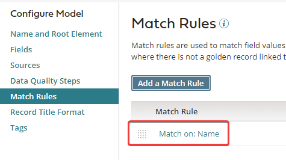
Create a Data Quality Step
Click on the "Data Quality" tab and click "Add Your First Data Quality Step":
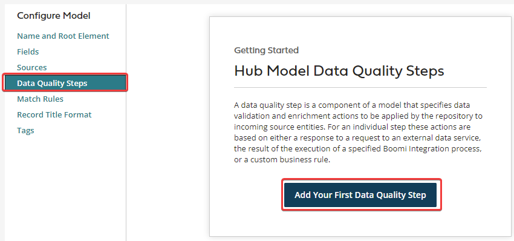
There are many ways to create a data quality rule. For this exercise we will create a simple Business Rule to check that the BSB (Bank State Branch) number does not contain a hyphen.
Click on "Business Rule":
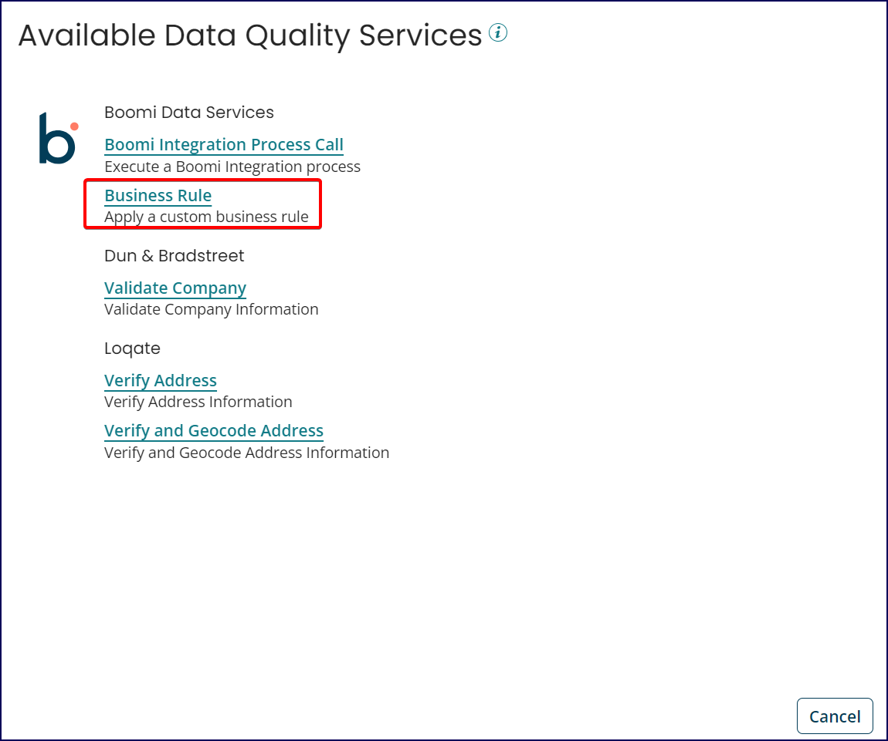
Click "Add" 🡪 "Field":
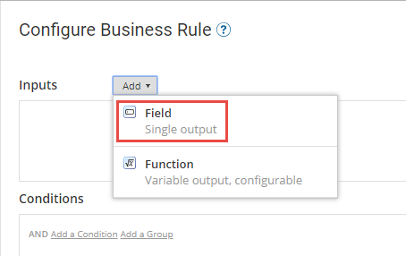
Choose "BSB" and click "OK":
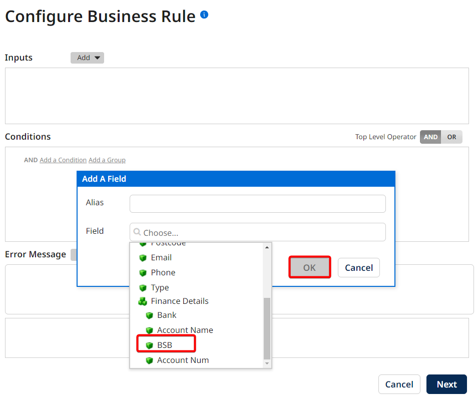
Click "Add a Condition":
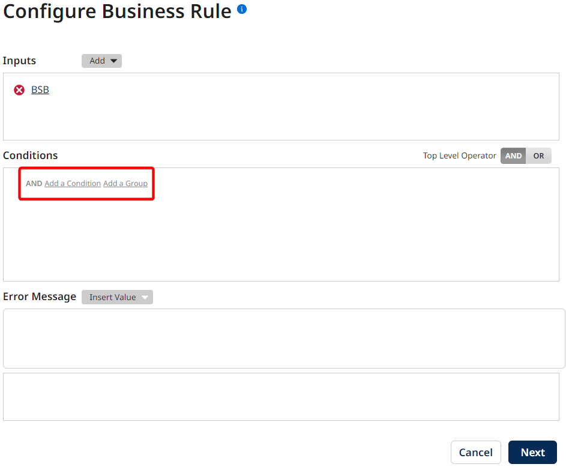
Choose "BSB", "does not contain", "Static", and type a "-". Click "Save":
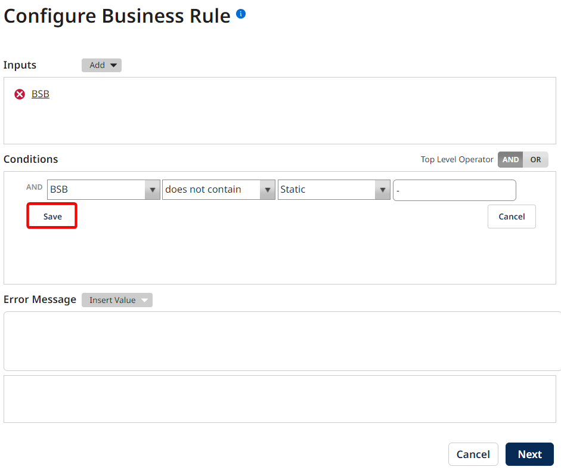
In the Error Message section click on "Insert Value" 🡪 "BSB":
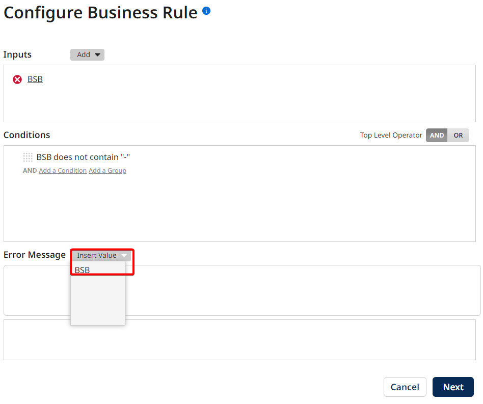
Type the following in the error message field:
"BSB number {1} contains a hyphen (-) which is not allowed"
Click "Next".
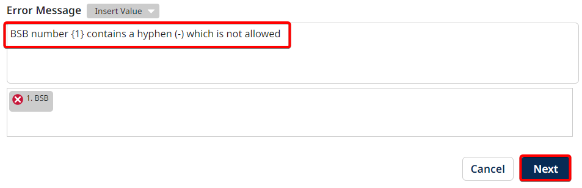
Enter the name "Check hyphen in BSB number", click "Finish":
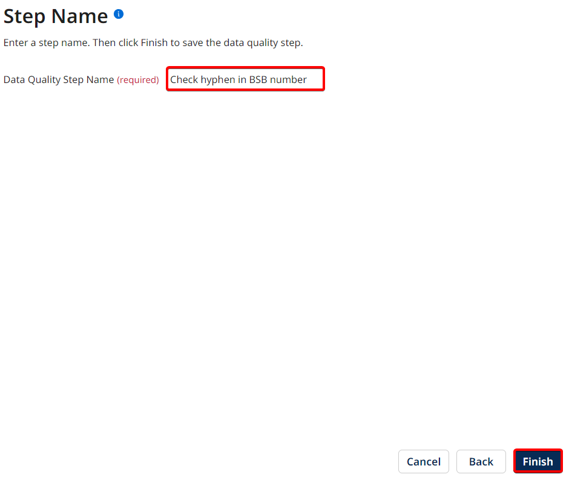
Create a Tag
We will now create a Tag. Tags are a way to automatically categorise the data inside the repository.
Click on the "Tags" tab then "Add Your First Tag":
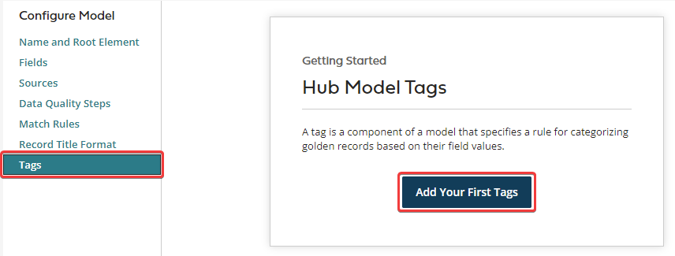
Name the tag "#Prospect", click "Add" 🡪 "Field":
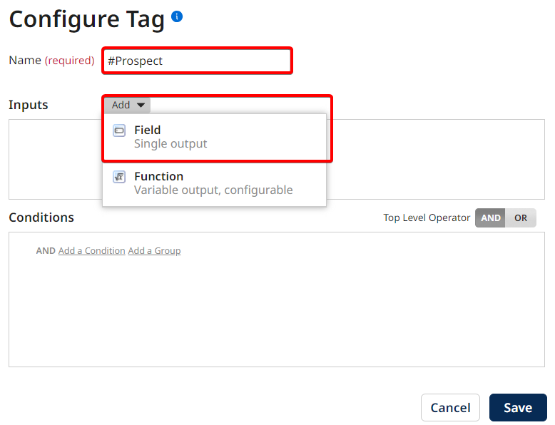
Click "Choose" -> "Type" and click "OK":
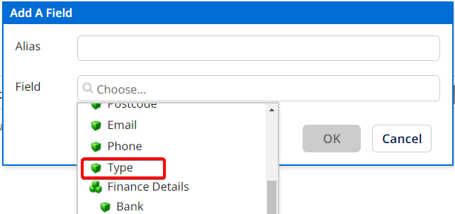
Under the Conditions section click on "Add a Condition":
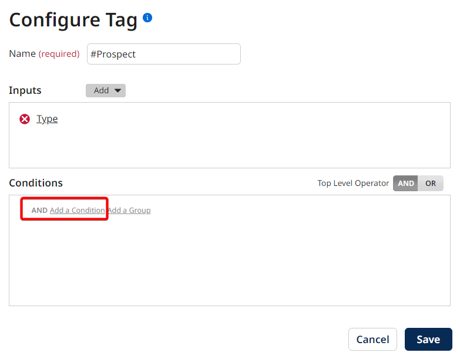
Select "Type", "=", "Static" enter "Prospect" and click "Save":
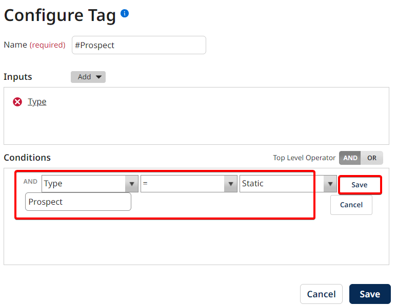
Click "Save":
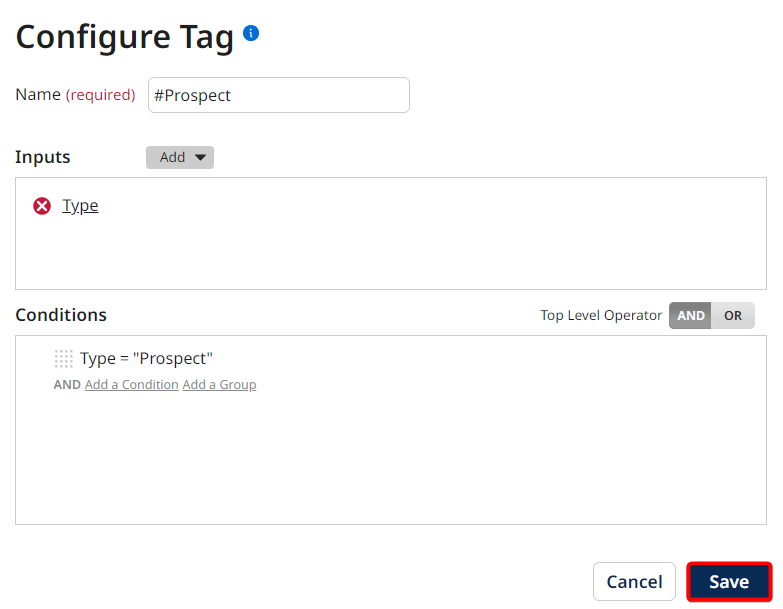
Publish & Deploy the Model
The model is now completely configured. However, it is currently in draft. Click "Publish" to publish the model:
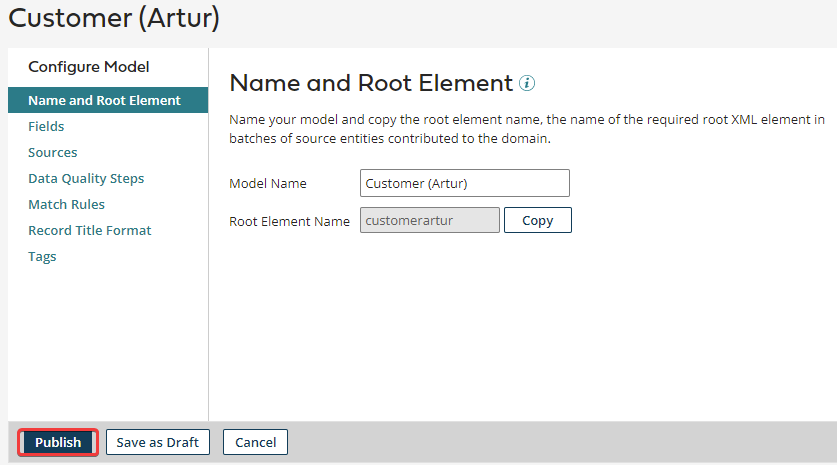
Add a publication note and click "Save":
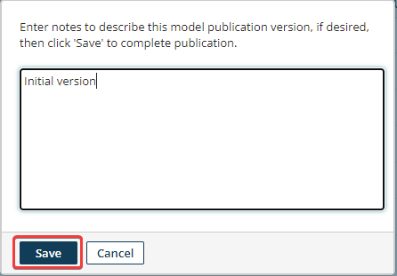
Click "Close" on the confirmation dialog:
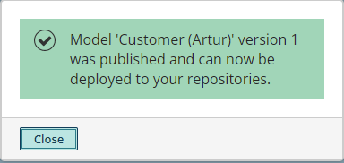
Click on the "Deploy" button next to your model:
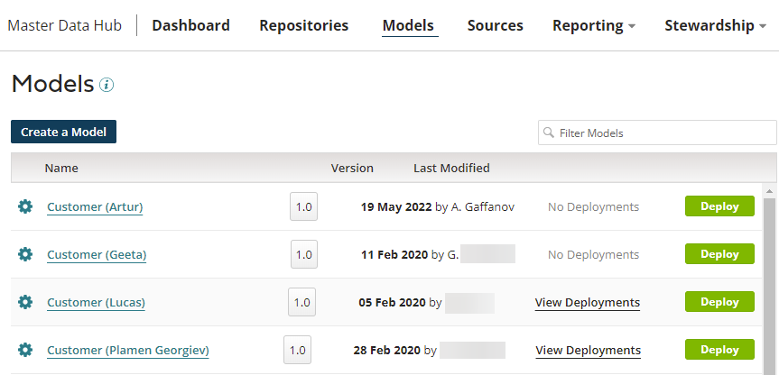
Select the "Training" repository then click "OK":
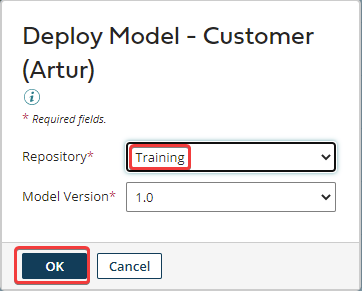
Confirm that your model has been deployed and attached to Training repository:
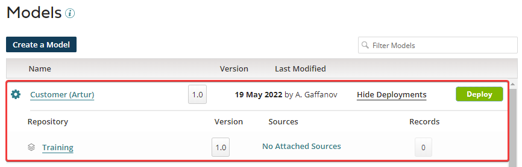